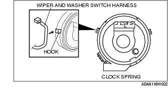
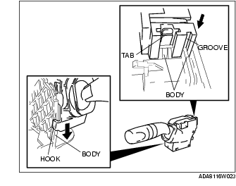

Wiper and washer switch removal/installation
1. Disconnect the negative battery cable.
2. Remove the column cover. (See COLUMN COVER REMOVAL/INSTALLATION.)
3. Remove in the order indicated in the table.

|
1
|
Connector
(See Connector Installation Note.)
|
|
2
|
Wiper and washer switch
|
4. Install in the reverse order of removal.
Connector Installation Note
1. Install the wiper and washer switch harness shown in the figure onto the clock spring hook.

Wiper and Washer Switch Installation Note
1. Insert the wiper and washer switch groove and hook shown in the figure into the body.

2. Insert the wiper and washer switch tab into the body until it is engaged with the body.